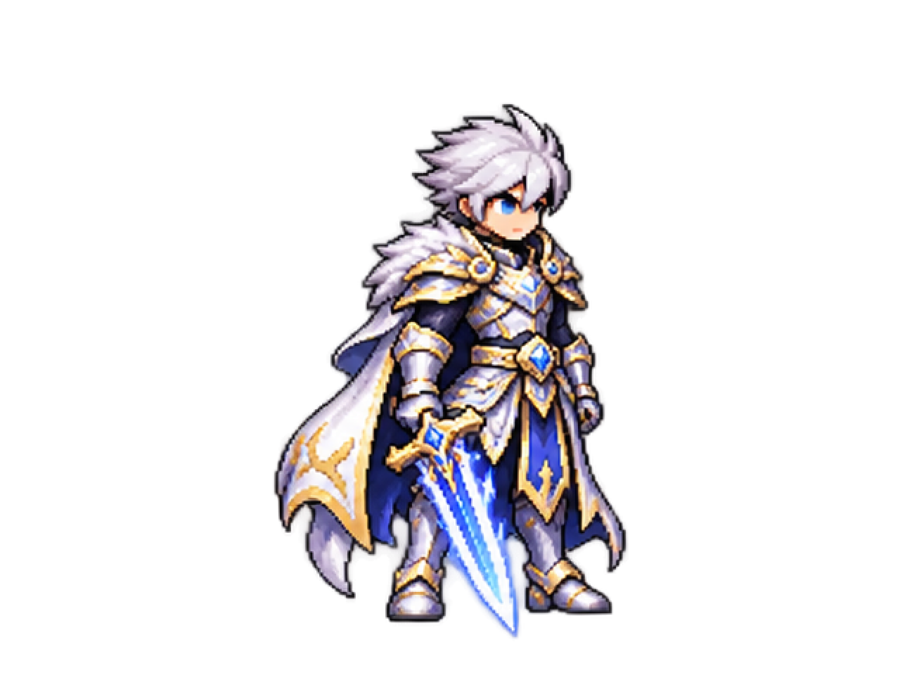
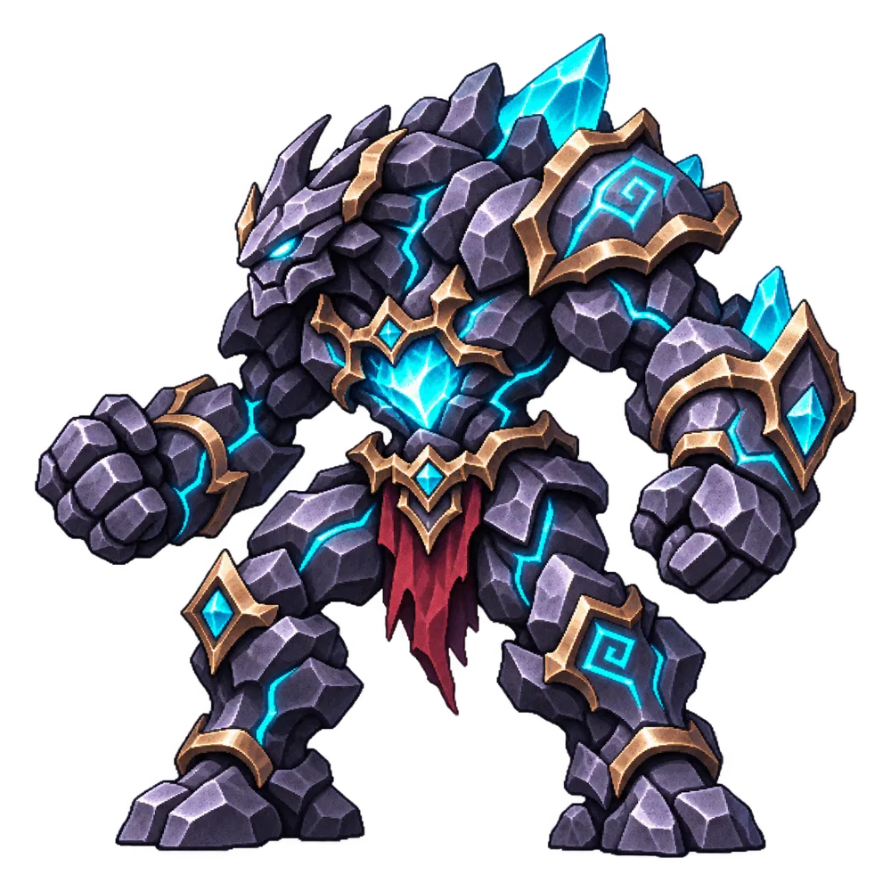
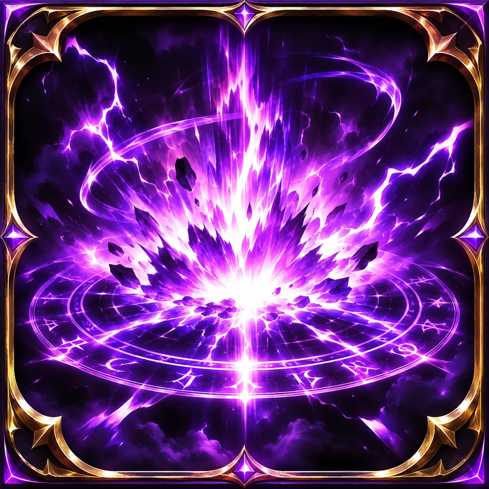
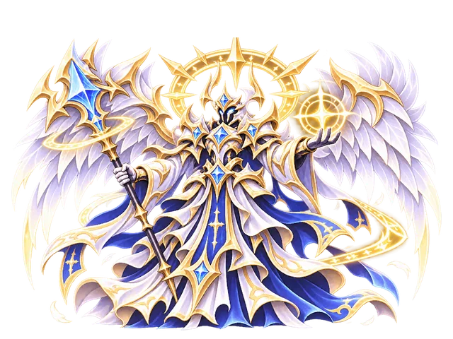
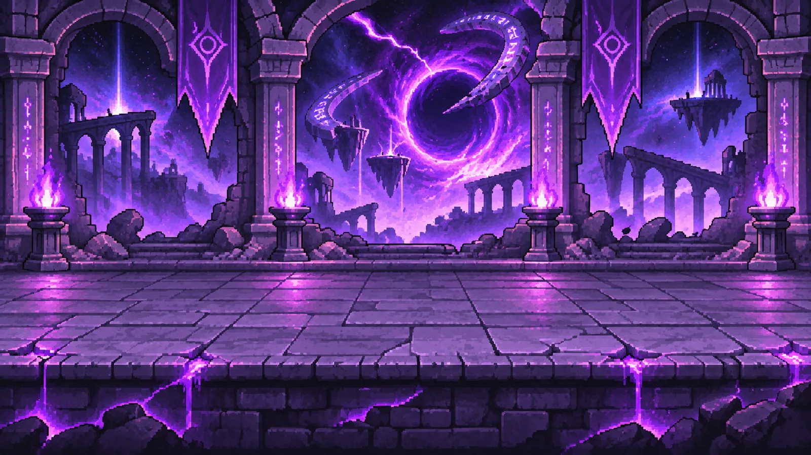
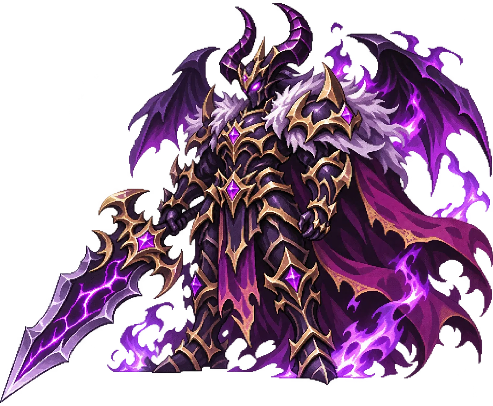

AI-ASSISTED GAME DEVELOPMENT
PROJECT :
HUNTER
AI와 협업해 개발하고,
플레이 데이터로 검증한 웹 기반 RPG.

아이디어에서 플레이 가능한 게임으로.
반복 전투의 성장 재미를 중심으로 시작해, 콘텐츠·분석·QA를 갖춘 웹 RPG로 확장했습니다.
설계 중심: 성장이 숫자의 증가를 넘어 이전에 실패했던 보스를 다시 공략하는 경험으로 이어지도록 구성
AI가 구현을 돕고, 사람이 판단하고 검증했습니다.
개발의 핵심은 한 번의 코드 생성보다 요구사항 정의 → 실행 → 문제 발견 → 수정의 반복이었습니다.
문제 정의
필요한 게임 경험과 기능을 정하고 구현 단위로 나눔
제작 협업
AI를 통해 게임 로직, UI 코드, 그래픽 리소스를 구현·수정
실행 검증
브라우저에서 실제 플레이하고 로그·QA 데이터를 확인
수정 결정
개선안을 비교해 채택하거나 거절하고 결과를 재검증
AI가 제안한 방법이 반드시 게임의 목표에 맞는 것은 아니었습니다. 기능의 정상 작동, 성장 경험, 밸런스 유지 여부를 직접 판단하며 개발 방향을 수정했습니다.
반복 플레이를 지탱하는 핵심 시스템
전투·성장·장비·스킬을 하나의 보스 공략 루프로 연결했습니다.

01 / AUTO BATTLE자동 전투
일반 몬스터·보스 전투, HP·치명타·피해량 계산 및 보상
헌터 성장
레벨업, 공격력·체력·방어력, 공격 속도·치명타 강화
장비 파밍
장비 획득·교체·등급·인벤토리·판매·상세 정보

스킬 운용
쿨타임, 자동·수동 스킬, 보스 대응을 위한 선택
자동 전투에 직접 대응하는 순간을 더하다.
10개 던전·50스테이지로 콘텐츠를 확장하고, 후반 보스마다 구분되는 전용 패턴을 도입했습니다.
경고와 대응 스킬을 활용한 패턴
차원 테마의 별도 전투 패턴

SSS / 천상의 신전라디엘천상의 심판 — 연속 참격으로 수동 대응
10초 이내 3스킬 직접 사용 패턴
자동 스킬이 모든 패턴을 해결하지 못하도록 제한하여, 방치형 전투의 편의성과 플레이어의 직접 판단을 공존시키고자 했습니다.
AI 제작 리소스를 실제 게임 경험으로 연결하다.
캐릭터·몬스터·보스·배경을 제작하고 크기·정렬·가독성 문제를 QA하며 화면을 개선했습니다.

IN-GAME BACKGROUND / 차원의 균열
실제 적용 과정에서 보스 이미지의 화면 비율, 모바일 메뉴 탭, 제목·버튼 정렬, 스킬 이펙트 등을 반복 수정했습니다.
※ 본 페이지 이미지는 실제 소스에 포함된 리소스입니다. UI 변경 전·후 스크린샷은 2차 보완 대상입니다.AI 제안을 그대로 받아들이지 않은 이유.
성장 정체를 완화하는 동시에 파밍 가치와 콘텐츠 수명을 유지해야 했습니다.
스테이지 진행이 막혔다면,
아이템을 더 자주 주면 될까?
드롭률 상향은 단기적으로 성장 정체를 해소할 수 있지만, 장비 파밍의 의미가 약해질 위험이 있습니다.
아이템 드롭률 상향
즉각적인 보상 증가
성장·경제 수치 조정
강화 비용, 몬스터 성장과 보상 균형 검토
AI는 가능한 해법을 빠르게 제시하지만, 어떤 해법이 게임의 경험에 적합한지 선택하는 책임은 개발자에게 있습니다.
보스를 만나기 전, 승리 가능성을 계산하다.
전투 조건을 바탕으로 예상 승률을 계산하고, 실제 공략 결과와 비교할 수 있도록 설계했습니다.
스킬 조건을 반영한 반복 전투 시뮬레이션skill-monte-carlo-v1
게임 내부 확률 시뮬레이션이며, 별도로 학습한 머신러닝 모델은 아닙니다. AI는 개발 과정의 협업 도구로 활용했습니다.
숫자만 보지 않고 실제 전투로 검증했습니다.
승률 예측값과 전투 결과의 차이를 기록하여 성장 효과와 확률적 변동을 확인했습니다.
장비 교체와 강화 후
예측 성공률이 변화한 사례. 장비와 성장 시스템의 효과를 예측 모델에서 확인했습니다.
예측이 낮아도 승리할 수 있다
낮은 예측 성공률 조건에서도 실제 보스 공략 성공을 기록했습니다.
성장 정체를 데이터로 확인하고 계속 진행할 수 있게 수정했습니다.
강화 비용과 골드 수급, 몬스터 성장 속도의 불균형을 검토한 실제 QA 사례입니다.
* 서로 다른 시점의 누적 플레이 기록. 모든 차이를 단일 패치의 효과로 단정할 수는 없습니다.
- 강화 비용 증가율과 구매 가능 구간 재검토
- 몬스터 HP·공격력 성장 곡선 조정
- 후반 골드 보상 및 경제 흐름 개선
- 기존 세이브 데이터의 강화 비용 재계산 로직 적용
- 수정 후 지속 플레이로 진행 구간 확인
완성은 코드 생성이 아니라 오류를 끝까지 해결하는 과정이었습니다.
보스 기록 누락 사례를 중심으로, 플레이 테스트에서 발견된 오류를 수정하고 재검증했습니다.
기록 누락 발견
보스 공략 결과가 누적 통계에 정상 반영되지 않는 현상 확인
로그·기록 시점 점검
오타 및 전투 시작·종료 기록 경로를 확인
기록 HOTFIX
결과 기록 복원·중복 집계 방지 보완
재실행 후 확인
누적 승패 통계·보스 기록 UI·저장 동작 재검증
AI로 시작한 제작을 검증 가능한 결과물로.
설계, 구현, 플레이 테스트, 데이터 검증, 반복 수정, 배포까지 한 사이클을 경험했습니다.
“AI가 만들어 준 결과를 그대로 사용하는 데 그치지 않고, 직접 검증하고 개선하는 개발 과정을 경험했습니다.”
게임의 완성도를 높이는 데 필요한 것은 구현 속도만이 아니라, 문제를 정확히 정의하고 플레이 결과를 확인해 수정 방향을 결정하는 능력이라는 점을 배웠습니다.